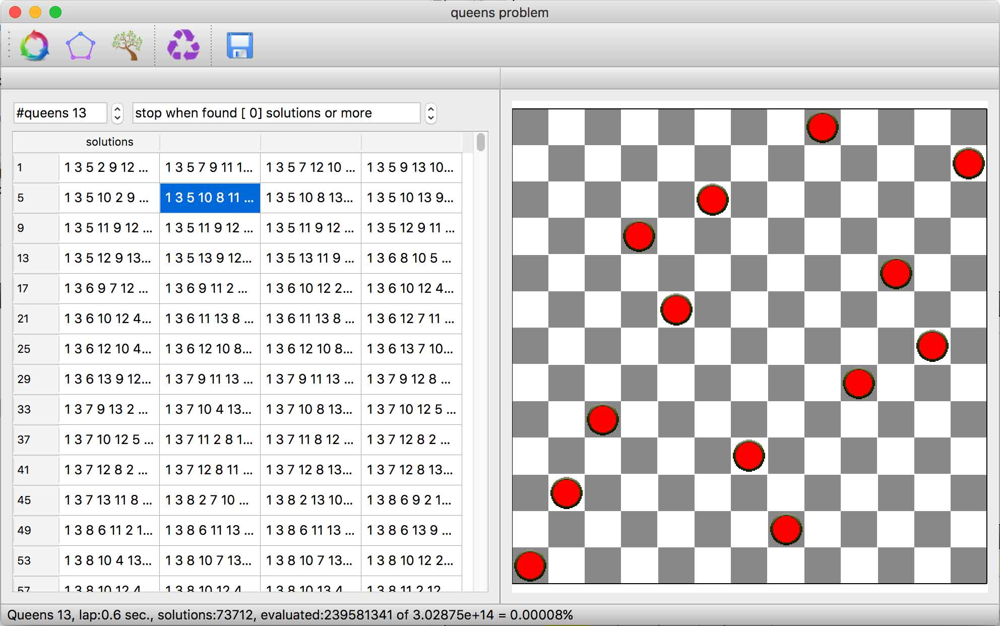

|
Solves any number of chess queens problem using three different approaches: Combinatory: O(n^n) → slowest Permutations: O(n!) Tree optimized < O(n!) → fastest Generation is performed multi threaded, so all cores of CPU are used, for very large number of queens the ‘stop when found [n] solutions or more’ can be used, (0=all solutions) Results can be saved to a text file or copied to clipboard (total or selection), board image can also be copied as an image. Selected results can be transformed by translation, rotation or mirroring. Window geometry, n queens, stop solutions and dock positions are stored in main settings.
It has been tested for n=34, providing the first solution in about 3 minutes on an 8 core i7 CPU. |
